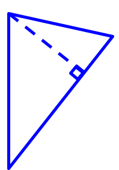

Loading...
■ Menghitung Perkiraan Luas
Hutan

Berapa perkirakan luas hutan tersebut?
Sekitar
km²
4.800 or 4800
Luas yang sebenarnya = 5.156 km²
Untuk menghitung perkiraan luas suatu bentuk, bayangkan
bangun datar apa yang paling mirip dengan bentuk tersebut.